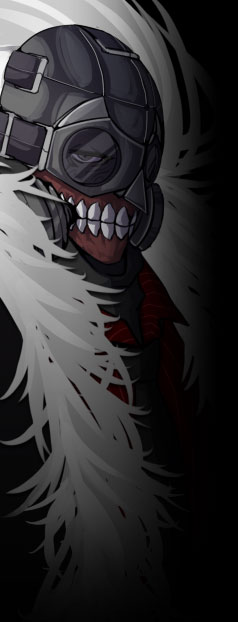

|
▼抑制機構【 テセウス 】
下層を管轄する機関。
かつては能力者主義を掲げ、上層に挑んだ革命組織。
元々の母体はマフィアであり、数ある下層のマフィアをジョン＝ドゥが一代でまとめあげた。
武装親衛隊ヘル、情報室ヨルムンガンド、特殊部隊フェンリルを統括する。
グングニルから管轄組織として言い渡されているが、
実質的には下層の暴動の鎮圧、犯罪抑止の意味合いが非常に強い。
下層は上層・中層と比べ、又違った独自社会が形成されている側面があり
、
テセウスの存在は下層のパワーバランスを大きく担っている。
元々が能力者主義であった為か、構成員は能力者や虐げられてきた者、
負傷や傷害でサイボーグ化した者などで多く構成されている。
テセウスの多くの者がジョン＝ドゥをビッグ・ボスと慕い、畏れ、敬っている。
ＴＲＰＧ上におけるテセウス主要ＮＰＣは以下の４名となる。
◆ジョン＝ドゥ
◆マチルダ －詳細はヘルを参照。
◆セラフィーマ －詳細はヨルムンガンドを参照。
◆ガラ －詳細はフェンリルを参照。
|

イラスト SATORU |
ジョン＝ドゥ
男性 35歳
能力タイプ
クリエイター
能力名 全てを蝕む者 - ペインベノム -
テセウスのビッグ・ボス。特徴的なマスクをする巨漢。
そのマスクは今もなお腐敗し、朽ちていっている体を隠すものである。
あらゆるガスを生成する【
ペインベノム
】を持つクリエイター能力者。
能力の為か、薬を含めるあらゆる毒を受け付けない。
過去、その能力のせいで回復能力者であった姉を死においやっている。
仲間には寛容ではあるが、逆らう者には容赦しない。
威厳とカリスマ、そしてなによりも力で下層をねじ伏せてきた豪傑。
だが身体は能力により蝕まれており、余命はあと数年と言われている。
又、それまでバラバラであったマフィアの各勢力は
闇商会【
スヴァルトアルフ
】と蜜月の関係であった。
ジョン＝ドゥによってそれが是正され、
腐敗したマフィア事情が自浄されたとも言える。
余談だがなぜか猫などの動物や子供に懐かれやすい。
「気が付けば隣で笑っていた奴が死んでいく。所詮ここはそういう場所さ。」
「…好きにしろ。俺は知らん。」
性能：基礎５ｐステータス＋ボス特性１０ｐ | |